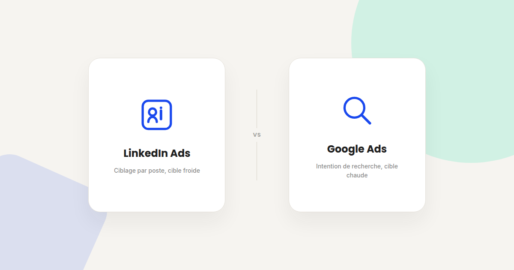
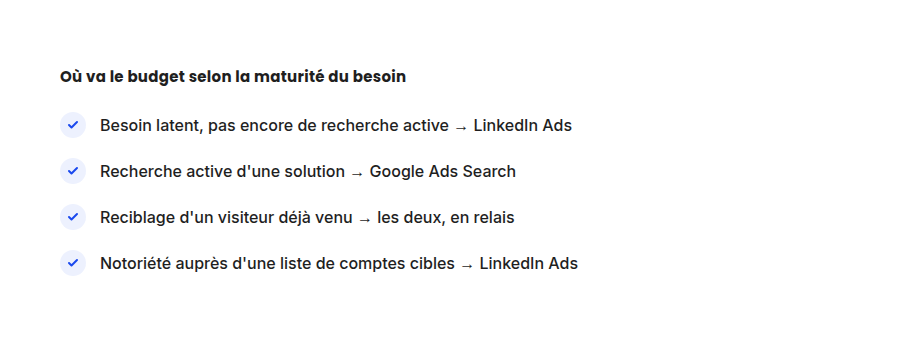

LinkedIn Ads ou Google Ads pour du B2B : comment trancher
« On devrait faire du LinkedIn plutôt que du Google Ads, non ? » — la question revient dans presque toutes mes premières réunions avec un client B2B. La réponse courte : ce n'est pas un choix binaire, ce sont deux outils qui répondent à deux moments différents du parcours d'achat.

Dans les audits d'acquisition B2B que je mène, l'erreur la plus fréquente n'est pas de choisir le mauvais canal — c'est de comparer les deux sur le même indicateur, alors qu'ils ne mesurent pas la même chose. Voici comment je les compare vraiment, poste par poste.
Le ciblage
Le ciblage LinkedIn Ads se fait par attributs professionnels déclaratifs : poste, ancienneté, secteur, taille d'entreprise, et même des listes de comptes précis en Account-Based Marketing. Vous atteignez la bonne personne même si elle n'a encore rien cherché.
Google Ads Search fonctionne à l'inverse : le ciblage se fait par intention de recherche, pas par profil. Vous ne savez pas qui tape la requête, mais vous savez qu'elle exprime un besoin actif au moment précis où elle la tape.
Quand LinkedIn Ads prend l'avantage
- Le besoin n'est pas encore recherché activement. Un nouveau poste, un logiciel émergent, une catégorie que le marché ne connaît pas encore par son nom : personne ne tape la bonne requête sur Google, donc Google Ads ne peut rien capter.
- La cible est un profil précis dans une liste d'entreprises identifiées. L'ABM (Account-Based Marketing) via LinkedIn permet de cibler nommément les comptes stratégiques d'un pipeline commercial — impossible à répliquer avec la même précision sur Google Ads.
- Le cycle de vente est long et implique plusieurs décideurs. LinkedIn permet de toucher différents interlocuteurs d'une même entreprise (le technique, le financier, le décideur final) avec des messages adaptés à chacun.
Quand Google Ads prend l'avantage
- Le besoin est déjà identifié et recherché. Une requête comme « logiciel de facturation PME » signale une intention active — le prospect est déjà plus avancé dans sa réflexion qu'un lecteur de fil LinkedIn.
- Le coût par clic doit rester maîtrisé. LinkedIn Ads coûte structurellement plus cher au clic que Google Ads Search sur la plupart des secteurs B2B, en particulier sur les postes à forte concurrence (RH, tech, finance).
- Le volume de recherche existe déjà sur le sujet. Sans volume de recherche minimum, Google Ads ne peut tout simplement pas délivrer d'impressions suffisantes — LinkedIn n'a pas cette contrainte de volume.

Le duo plutôt que le duel
Dans la plupart des comptes B2B que j'accompagne, la combinaison la plus rentable n'est ni « tout LinkedIn » ni « tout Google » : c'est LinkedIn pour construire la notoriété et l'intention sur une liste de comptes cibles, puis Google Ads pour capter cette même intention une fois qu'elle devient une recherche active — et le reciblage Google Display ou LinkedIn pour ne pas perdre le contact entre les deux.
Comment répartir un budget limité
- Démarrez par Google Ads Search si le budget est serré. Le coût par lead y est généralement plus prévisible qu'en LinkedIn Ads, avec un volume de recherche suffisant sur vos mots-clés cœur de métier.
- Réservez LinkedIn Ads aux listes de comptes à forte valeur. Plutôt que du ciblage large et coûteux, concentrez le budget LinkedIn sur une liste resserrée de comptes stratégiques identifiés par les commerciaux.
- Mesurez sur un cycle complet, pas sur le coût par clic. Un clic LinkedIn plus cher peut produire un lead plus qualifié et donc un coût par client final inférieur — comparez le CAC, pas le CPC.
FAQ
LinkedIn Ads est-il toujours plus cher que Google Ads en B2B ?
Au clic, oui dans la plupart des cas. Mais le coût par lead qualifié ou par client final peut être inférieur si le ciblage précis de LinkedIn réduit le volume de leads non pertinents.
Faut-il un budget minimum pour démarrer sur LinkedIn Ads ?
LinkedIn Ads reste accessible à budget modeste, mais son efficacité dépend surtout de la précision du ciblage plus que du volume investi — mieux vaut un budget resserré sur une liste de comptes qualifiée qu'un budget large et diffus.
Peut-on mesurer LinkedIn Ads et Google Ads avec les mêmes indicateurs ?
Pas directement au niveau du coût par clic, très différent entre les deux plateformes. Le bon terrain de comparaison est le coût par lead qualifié ou le CAC, mesurés sur l'ensemble du parcours.
Besoin d'arbitrer votre budget entre LinkedIn Ads et Google Ads ?
Pour aller plus loin, voir la page SMA, la page SEA, et la page Analytics.
À lire aussi : Bing Ads : le canal B2B que tout le monde ignore et Performance Max : reprendre la main sur une boîte noire publicitaire.
Pour continuer sur ce sujet.